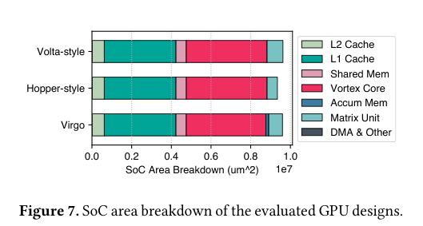
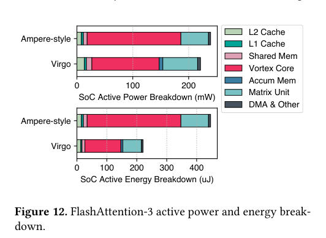

本报告由大模型自动生成，可能存在理解、归纳或数据转述错误；请以原论文为准。 Virgo: Cluster-level Matrix Unit Integration in GPUs for Scalability and Energy EfficiencyHansung Kim, R. Yan, Joshua You, Tieliang Vamber Yang, Yakun Sophia Shao · Proceedings of the 30th ACM International Conference on Architectural Support for Programming Languages and Operating Systems, Volume 2 · 2025 · 原文 · PDF 图表提取提示：报告提到的 Table 3 未能自动裁出；请查看原论文 PDF。 报告模型：gemini-3.1-pro-preview / high 当前日期是 2026-10-01。以下是对这篇发表于 ASPLOS 2025 的论文《Virgo: Cluster-level Matrix Unit Integration in GPUs for Scalability and Energy Efficiency》的详细解析。 摘要与引言 (Abstract & Introduction)深度学习应用（如大语言模型）的爆发极大推动了对大规模矩阵乘法（GEMM，缩写含义原文未说明，单位：原文未说明）的算力需求。为了加速这类计算，现代 GPU（缩写含义原文未说明，单位：原文未说明）引入了专用的硬件加速单元，例如 NVIDIA 的 Tensor Core（张量核心，一种专门用于执行高效矩阵乘加运算的微架构模块）。 问题的产生： 在现有的 GPU 架构中，这些专用矩阵单元被“紧耦合（Tightly Coupled）”在 SIMT（缩写含义原文未说明，单位：原文未说明）核心内部。【背景补充：SIMT 核心负责管理多个线程并发执行同一条指令。GPU 通常由多个“集群（Cluster）”组成，每个集群内部包含多个 SIMT 核心、共享内存（Shared Memory）以及 L1（缩写含义原文未说明，单位：原文未说明）缓存。】 在这种紧耦合设计下，矩阵单元必须通过 SIMT 核心内部的寄存器文件（Register File，GPU 核心内为每个线程分配的超高速片上存储器）来接收输入操作数并写回累加结果。由于寄存器文件的容量和读写带宽受到严格的硬件物理限制，这就迫使硬件设计者只能支持极小粒度的矩阵分块（Tile，即单次硬件操作所处理的矩阵子块，例如 16×8（单位：原文未说明）的矩阵维度）。这种小粒度不仅限制了数据的复用，还导致 SIMT 核心必须不断执行大量的指令来进行指令调度和地址计算，从而在实际计算之外消耗了大量的能量和功率。 作者的解决方案： 为了打破这种因寄存器文件带来的扩展性瓶颈，作者提出了 Virgo 这一全新的 GPU 微架构。Virgo 的核心思想是物理级解耦（Physical Disaggregation）：将专用矩阵单元从 SIMT 核心的流水线中剥离出来，直接放置在更上一层的“集群（Cluster）”级别，作为一个统一的共享加速器存在。这种设计彻底绕过了核心内部的寄存器文件，在硬件层面放大了矩阵操作的粒度（即增大了单次操作的 Tile 尺寸），大幅减少了核心指令处理的能耗开销。同时，操作数和累加结果的访问被卸载到了共享内存和专用的累加器内存中，提高了数据复用率。此外，这种解耦设计允许 SIMT 核心与矩阵单元高效并发执行，特别适合融合型深度神经网络（Fused DNN）工作负载的映射。 背景与动机 (Background and Motivation)为了理解 Virgo 的设计动机，必须先看清现代 GPU 的存储层次与架构演进如何被 EDA 物理约束所影响。在微架构层面，随着 Tensor Core 算力代际呈指数级增长，如何为其持续“喂”数据成为了核心矛盾。 现有设计的演进与局限：
遗留问题： 尽管 Hopper 缓解了操作数的瓶颈，但矩阵乘法的累加结果（Accumulator）仍然需要写回寄存器文件。这是由 SIMT 编程模型的根本约束决定的：寄存器空间是按 Warp 私有化分配的（Privatization）。随着计算规模增大，累加器占用的寄存器空间急剧增加，不仅限制了单次 Tile 操作的最大尺寸，还由于物理上分散在各个 SIMT 核心内部，阻碍了跨核心的数据共享。这促使 Virgo 走向了集群级的彻底解耦。 Virgo 微架构设计 (Virgo Microarchitecture)Virgo 的研究对象处于 GPU 的“集群（Cluster）”层级。其硬件设计主要解决了四个微架构挑战： 1. 命令接口 (Command Interface)： 既然矩阵单元不在核心内部，SIMT 核心如何控制它？Virgo 没有选择修改繁杂的 SIMT 核心指令集（ISA），而是建立了一个基于 MMIO（Memory-Mapped IO，单位：原文未说明）的命令接口。SIMT 核心只需向特定的内存地址范围发出普通的加载（Load）和存储（Store）指令，即可控制矩阵单元。该接口通过一个轻量级的集群局部片上网络（NoC，Network-on-Chip，单位：原文未说明）连接。 2. 存储系统与 EDA 物理映射的协同 (Memory System)： Virgo 的存储系统必须同时处理两类极其不同的访存请求：来自 SIMT 核心的窄请求（每通道 4 字节）和来自矩阵单元的极宽请求。在 RTL（缩写含义原文未说明，单位：原文未说明）物理综合中，为了容纳来自核心和矩阵单元的不同大小的访问，同时产生最小的 Bank（存储体）冲突，作者对共享内存进行了二维 Bank 划分。
3. 数据搬运与同步： 集群内集成了一个可通过 MMIO 编程的 DMA 引擎，负责在全局内存、共享内存和累加器内存之间异步搬运数据。同时，增加了一个轻量级的集群级同步器（Synchronizer），使得分布在不同 SIMT 核心中的 Warp 能够通过栅栏（Barrier）指令实现全局协调。 编程模型 (Virgo Programming Model)硬件的解耦必然要求软件层面的重构。Virgo 的编程模型基于两个原则：异步接口与 Warp 协同执行。 由于矩阵单元作为独立的硬件执行，SIMT Warp 在通过 MMIO 触发矩阵计算后（即非阻塞调用），可以继续执行后续指令，而无需等待计算完成。这就使得软件流水线（Software Pipelining）成为可能：例如，DMA 正在搬运下一轮的输入 Tile（生产者），矩阵单元正在计算当前的 Tile，而 SIMT 核心的 Warp 正在对上一轮的计算结果执行激活函数等后处理操作（消费者）。这种流水线使得所有硬件组件的利用率最大化。 为了支持这种范式，作者将计算的原子单元从细粒度提升到了线程块（Thread Block）或工作组（Workgroup）级别。在 Virgo 提供的 C++ 模板库中，单次操作处理的矩阵维度达到了 128×64×128（单位：原文未说明）。这里的记号 （具体含义原文未说明，单位：原文未说明）定义了单次矩阵乘加硬件操作的 Tile 尺寸（关于其与具体输入和累加矩阵尺寸的对应关系，原文未定义/未说明）。在这个模型下，集群内的多个 Warp 必须协同工作，共同将数据从全局内存搬运到共享内存，并维持双缓冲（Double Buffering）机制。 评估与实验 (Evaluation)为了验证设计，作者使用 Chisel（一种硬件描述语言）和 Chipyard 框架生成了包含 Vortex SIMT 核心和 Gemmini 脉动阵列（一种数据流驱动的计算结构，用作 Virgo 的矩阵单元）的完整 SoC（缩写含义原文未说明，单位：原文未说明）硬件 RTL 代码。为了实现“控制变量”的公平对比，作者还利用 RTL 实现了三种基线模型：
架构与 EDA 评估的接口： 论文明确展示了架构设计与 EDA 工具之间的联系。作者使用 Cadence Genus 评估芯片面积（图 7）和验证运行时序（目标约束为 400 MHz 目标频率，传递的量为使用商业 16nm 工艺），使用 Cadence Joules 评估功耗。在此跨层接口中，存在一个关键的建模假设和信息损失：L1 缓存被综合为触发器阵列（flop arrays）而不是 SRAMs，导致其消耗了较大的面积，但作者声明这并未影响评估中的关键发现。这里一个关键的设计权衡是：开源的 Vortex 核心在转为 ASIC（缩写含义原文未说明，单位：原文未说明）设计时，由于大量使用触发器阵列且缺乏时钟门控（Clock Gating，一种 EDA 层面的降功耗技术），其空闲功耗（Idle Power）极高。如果直接对比总功耗，会掩盖架构创新的真实贡献。因此，作者在代价模型中明确将分析指标设定为有源功耗（Active Power = 总功耗 - 空闲功耗），从而准确隔离出 Virgo 架构设计带来的收益。  1. GEMM 性能与功耗分析：
2. 融合内核映射 (FlashAttention-3, 图 12)： 作者将 FlashAttention-3（一种包含两次 GEMM 和一次 Softmax 激活的融合注意力机制算子）映射到 Virgo。在此场景下，Virgo 达到了 65.7% 的 MAC 利用率，远高于 Ampere 风格的 35.1%。这是因为 Virgo 允许 SIMT 核心在触发矩阵乘法后，立刻将指令槽和寄存器资源全部分配给 Softmax 计算，实现了真正的异步并发，使得该算子的能耗降低了 50.6%。  全文总结与主线逻辑主线叙事： 这篇文章的起点是观察到一个物理瓶颈：随着深度学习对矩阵算力的需求剧增，GPU 内部的 Tensor Core 被寄存器文件的容量和带宽卡住了脖子（背景与问题）。现有的优化（如 Hopper 允许操作数绕过寄存器）仍然保留了累加结果对寄存器的依赖，导致矩阵操作粒度无法继续做大，且核心内指令开销居高不下（现有局限）。为此，作者打破了常规，将矩阵单元直接从 SIMT 核心内“拔出”，集成到外层的集群共享级别，并彻底替换掉寄存器文件，改用专用的累加器 SRAM（Virgo 设计）。这种解耦设计的直接结果是：单条指令可以吞下极大的矩阵 Tile，不仅使得运算单元不再等待指令发射，还省去了大量无谓的指令解码和寄存器访问能耗（结果与论证）。最终，这种解耦架构通过异步编程模型，还意外地极好适配了当前主流的算子融合（Fused Kernel）趋势（扩展应用）。 关键假设、局限与过度推广的警告：
|